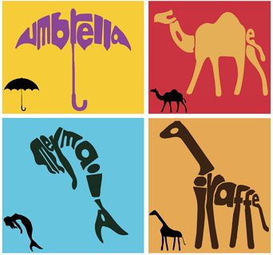
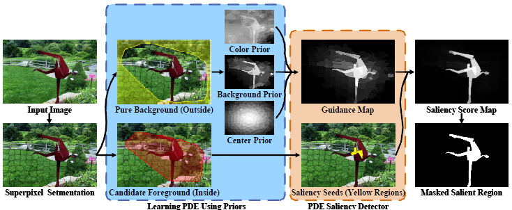
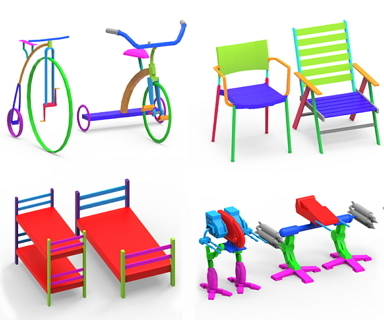
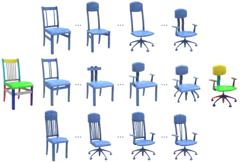

H-index: 10 | Google citation | DBLP | Research Gate
2016
-

Changqing Zou*, Junjie Cao*, Warunika Ranaweera, Ibraheem Alhashim, Ping Tan, Alla Sheffer, Hao Zhang, "Legible Compact Calligrams", ACM Trans. on Graphics (Special Issue of SIGGRAPH), 2016, conditionally accepted. (SCI, IF: 3.361) (CFC A)
-

Risheng Liu*, Guangyu Zhong, Junjie Cao, Zhouchen Lin, Shiguang Shan, Zhongxuan Luo, "Learning to Diffuse: A New Perspective to Design PDEs for Visual Analysis", IEEE Transactions on Pattern Analysis and Machine Intelligence, online, 2016. [Project page ]. (SCI, IF: 5.694) (CFC A)
2015
-

Ibraheem Alhashim, Kai Xu, Yixin Zhuang, Junjie Cao, Patricio Simari, and Hao Zhang, "Deformation-Driven Topology-Varying 3D Shape Correspondence", ACM Trans. on Graphics (Special Issue of SIGGRAPH Asia), Vol. 34, No. 6, Article 236, 2015. [PDF (20 MB) | PDF reduced (12 MB) | Project page | bibtex]. (SCI, IF: 3.361) (CFC A)
2014
-

Ibraheem Alhashim, Honghua Li, Kai Xu, Junjie Cao, Rui Ma, and Hao Zhang, "Topology-Varying 3D Shape Creation via Structural Blending", ACM Trans. on Graphics (Special Issue of SIGGRAPH), Vol. 33, No. 4, Article 158, 2014. [Project page | PDF | bibtex]. (SCI, IF: 3.361) (CFC A)
-
Risheng Liu*, Junjie Cao, Zhouchen Lin, Shiguang Shan. "Adaptive Partial Differential Equation Learning for Visual Saliency Detection", IEEE International Conference on Computer Vision and Pattern Recognition (CVPR), 3866-3873, 2014. (Oral, Accept rate: 5.75%) (CFC A) [PDF | Project page].